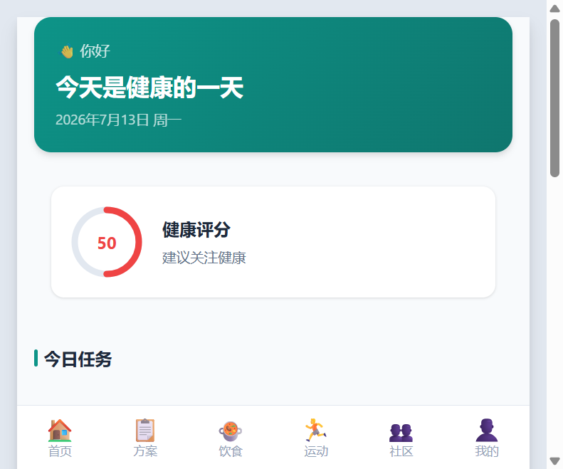
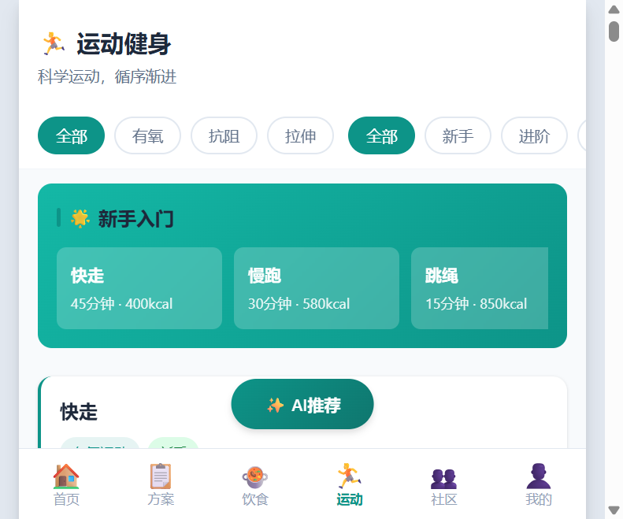
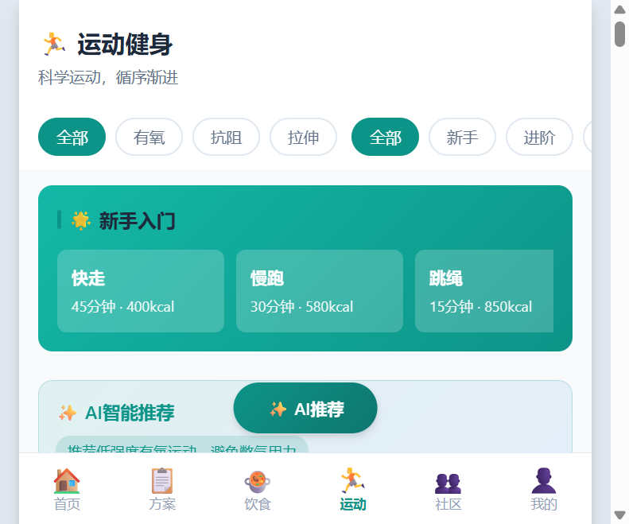

轻养助手是一款面向大众的健康管理应用，提供个性化饮食调养和运动健身方案，帮助用户科学管理健康。
轻养助手是一款集饮食调养、运动健身、AI智能推荐于一体的健康管理应用。 系统基于用户的健康档案（BMI、血压、血糖、血脂等指标），结合105道精选食谱和45项专业运动， 为用户提供个性化的健康管理方案。
105道精选食谱，涵盖早餐、午餐、晚餐、加餐四大类，支持按健康状况筛选
45项专业运动，包括有氧、抗阻、拉伸三大类，覆盖新手到高级全难度
根据用户健康档案智能推荐最适合的食谱和运动，按分类清晰展示
以下是本次Demo开发的三大核心功能模块，每个功能均经过多轮迭代优化。
系统收录了105道精选食谱，覆盖早餐（23道）、午餐（33道）、晚餐（30道）、加餐（19道）四大类别。 每道食谱都包含详细的食材清单、营养信息、烹饪步骤、食用功效、适宜人群等信息。 用户可按健康状况（降压、降糖、降脂、减重、通用）和餐次类型进行筛选。
| 功能特性 | 说明 | 数据量 |
|---|---|---|
| 食谱分类 | 早餐、午餐、晚餐、加餐 | 4 大类 |
| 健康标签 | 降压、降糖、降脂、减重、通用 | 5 种维度 |
| 详细信息 | 食材、营养、步骤、功效、适宜人群等 | 10+ 字段 |
| 筛选功能 | 按健康状况 + 餐次类型组合筛选 | 多维筛选 |
系统提供45项专业运动，分为有氧运动（16项）、力量训练（20项）、拉伸放松（9项）三大类。 每项运动都包含动作步骤、注意要点、锻炼肌群、常见错误、进阶变式等详细内容。 支持按运动类型和难度（新手/进阶/高级）进行筛选，新用户还提供新手入门专区。
| 功能特性 | 说明 | 数据量 |
|---|---|---|
| 运动分类 | 有氧、抗阻、拉伸 | 3 大类 |
| 难度等级 | 新手、进阶、高级 | 3 级难度 |
| 详细指导 | 步骤分解、常见错误、锻炼肌群等 | 8+ 字段 |
| 新手专区 | 精选8项入门运动，快速上手 | 8 项精选 |
AI智能推荐是系统的核心亮点功能。系统根据用户的健康档案（身高、体重、血压、血糖、血脂等）， 智能分析用户的健康状况，并从知识库中筛选出最适合用户的食谱和运动方案。 推荐结果按分类清晰展示，每个分类都有独立的标题和数量统计，方便用户快速浏览。
| 推荐维度 | 分析指标 | 推荐策略 |
|---|---|---|
| 体重管理 | BMI 指数计算 | 超重/肥胖推荐低卡减脂方案 |
| 血压管理 | 收缩压 / 舒张压 | 高血压推荐低盐低强度方案 |
| 血糖管理 | 空腹血糖值 | 糖尿病推荐低GI控糖方案 |
| 血脂管理 | 总胆固醇 / 甘油三酯 | 高血脂推荐低脂降脂方案 |
| 运动习惯 | 运动频率 | 智能匹配推荐难度等级 |
以下是系统主要功能页面的实际截图，展示了应用的核心交互界面。



本次Demo开发历经多个阶段，涉及前端、后端、数据库等多个层面的迭代优化。
| 会话阶段 | 主要任务 | 核心产出 |
|---|---|---|
| Session #1 | Bug修复 + 食谱扩充 | 修复运动页面CSS语法错误，为105道食谱补充详细信息 |
| Session #2 | 数据显示问题排查 | 修复分页限制，确保105道食谱和45项运动完整显示 |
| Session #3 | AI推荐功能开发 | 实现AI推荐接口和前端交互，支持个性化推荐 |
| Session #4 | 深度优化 + 展示升级 | 修复推荐逻辑，优化按分类展示效果，提升用户体验 |
本次Demo开发过程中遇到了多个反复出现的问题，以下是详细的问题描述和解决方案。
按照以下步骤操作，即可在其他电脑上正常运行本系统。
C:\qingyang-servercd C:\qingyang-servernpm install（首次运行需要，后续可跳过）npm start 或 node src/index.jshttp://localhost:3000| 项目 | 值 | 说明 |
|---|---|---|
| 用户名 | demo |
演示账户用户名 |
| 密码 | demo123 |
演示账户密码 |
| 健康档案 | 已预设高血压 + 糖尿病 | 用于测试AI个性化推荐效果 |
| 数据状态 | 105道食谱 + 45项运动 | 完整的知识库数据 |
| 问题 | 解决方案 |
|---|---|
| 端口3000被占用 | 修改 src/index.js 中的端口号，或关闭占用3000端口的程序 |
| npm install 失败 | 检查网络连接，或使用淘宝镜像：npm install --registry=https://registry.npmmirror.com |
| better-sqlite3 安装失败 | Windows需安装windows-build-tools，或确保已安装Visual Studio Build Tools |
| 页面显示空白 | 按F12打开控制台查看错误，确认后端服务是否正常启动 |
| 无法登录 | 确认用户名密码正确（demo / demo123），或直接使用未登录模式浏览 |